Adversarial Monte Carlo Denoising with Conditioned Auxliary Feature Modulation - Test Suite Overview
The following scenes were rendered with the Tungsten renderer and denoised using several different apporaches.
All techniques use auxiliary buffers specified by their papers and code. KPCN denotes [Bako et al.2017]; RAE denotes [Chaitanya et al.2017]; NFOR denotes [Bitterli et al.2016].
Results for other techniques are rendered using their public released code and weights. Results by RAE [Chaitanya et al.2017] are denoised using their public executable since their code is not released. The results include input rendered spanning 4, 16, 32, 64, 128 sample per pixel. Evaluation metrics include SSIM, PSNR, RMSE.
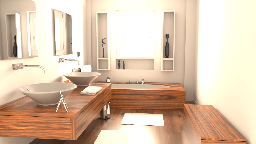
Bathroom
Bathroom
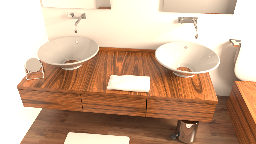
Bathroom Sink
Bathroom Sink
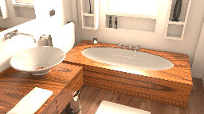
Bathroom Tub
Bathroom Tub
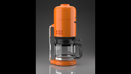
Coffee Pot
Coffee Pot
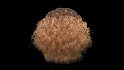
Curly Hair
Curly Hair
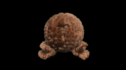
Furball
Furball
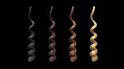
Hair Curl
Hair Curl
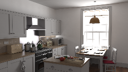
Kitchen
Kitchen
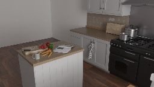
Kitchen Island
Kitchen Island
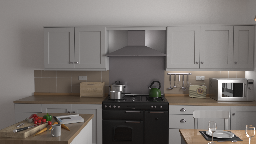
Cupboard
Cupboard
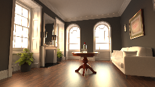
Horse Room
Horse Room
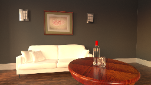
White sofa
White sofa
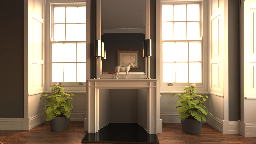
Cabinet
Cabinet
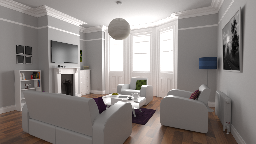
White Room
White Room
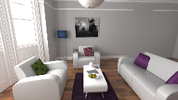
White Room Sofas
White Room Sofas
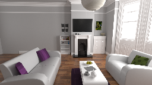
TV and Sofas
TV and Sofas
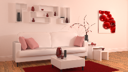
Pink room
Pink room
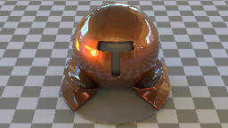
Material Testball
Material Testball
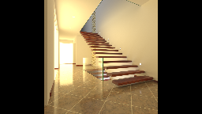
Staircase
Staircase
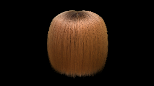
Straight Hair
Straight Hair
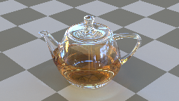
Transparent Teapot
Transparent Teapot
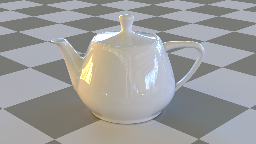
Porcelain Teapot
Porcelain Teapot
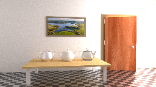
Veach-ajar
Veach-ajar

Veach-mis
Acknowledgements
We would like to thank NFOR for their dataset and interactive viewer.